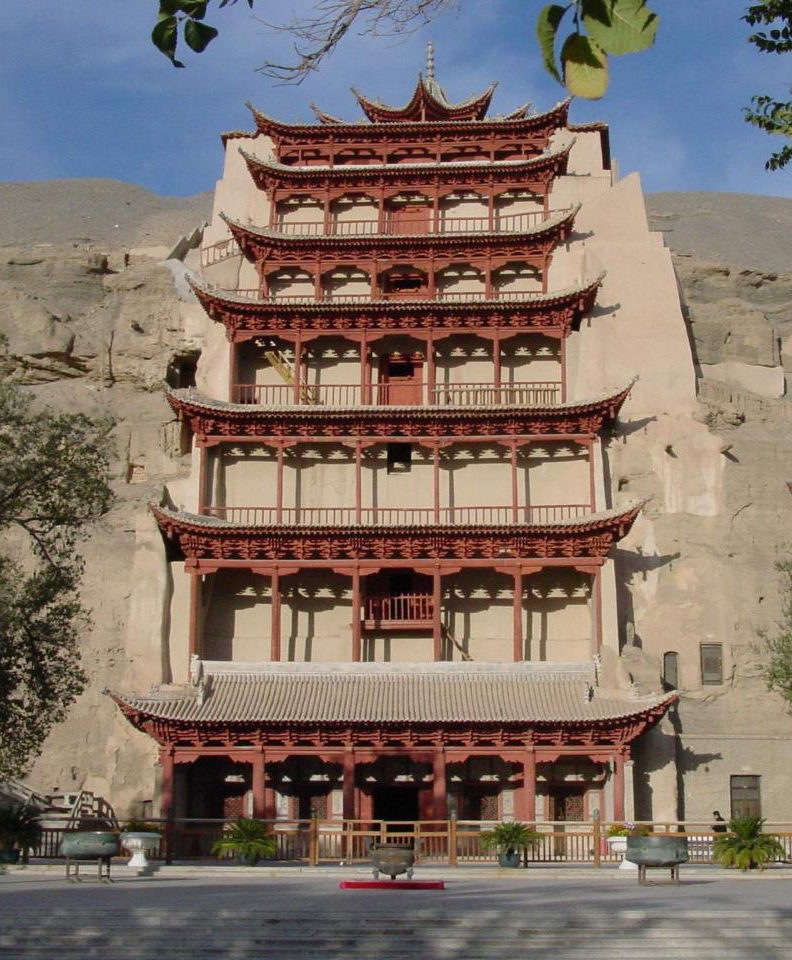
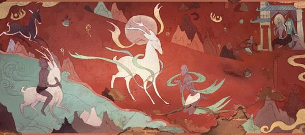
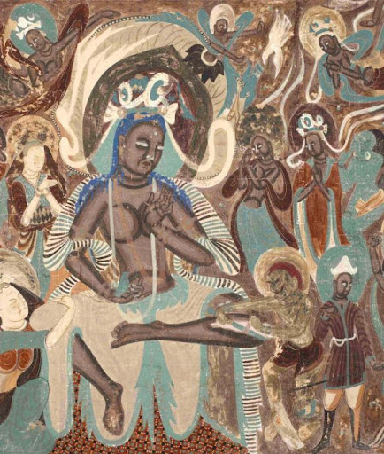

<!DOCTYPE html>
<html lang="en">
<head>
    <meta charset="UTF-8">
    <meta http-equiv="X-UA-Compatible" content="IE=edge">
    <meta name="viewport" content="width=device-width, initial-scale=1.0">
    <title>Document</title>
    <link rel="stylesheet" href="style.css">
    <style>a:hover {color:black;}</style>
</head>
<body>
    <div class="header">
    
        <ul class="navbar" id="navbar">
            <li><a class="home" href="../entrance.html">Home</a></li>
            <li data-toggle-id="intro1" >Introduction
             <ul id="intro1" hidden>
                <li>Mural</li>
                <li>Sculpture</li>
                <li>Caligraphy</li>
                <li>Architecture</li>
             </ul>
            </li>
    
            <li data-toggle-id="intro2">Tickets & Vist
             <ul id="intro2" hidden>
                <li>Tickets</li>
                <li>Address</li>
                <li>Arrival Info</li>
            </li>
             </ul>
            <li data-toggle-id="intro3">About
             <ul id="intro3" hidden>
                <li>Author</li>
                <li>Contacts</li>
              </li>
            
             
            
             </ul>
           
        </ul>
    
        <p class="Author" onclick="myFunction()">Lianghao-Cheng</p> 
    
        
    
        
    
    
    
    
    
       
    </div>   
    
    
    <div class="mp">
    <ul class="title">
    <p class="c1">Dunhuang Culture and Mogao Caves</p>
    <p class="c2">Carved into the cliffs above the Dachuan River, the Mogao Caves south-east of 
        the Dunhuang oasis, Gansu Province, comprise the largest, most richly endowed, and longest used treasure house of Buddhist art in the world.</p>
    </ul>
    <ul></ul>
    </div>

    <div class="mb">
    <p>The Mogao Caves, also known as the Thousand Buddha Grottoes or Caves of the Thousand 
        Buddhas, form a system of 500 temples[1] 25 km (16 mi) southeast of the center of Dun'huang, an oasis located at a religious and cultural crossroads on the Silk Road, in Gansu 
        province, China. The caves may also be known as the Dunhuang Caves; however, this term 
        is also used as a collective term to include other Buddhist cave sites in and around the Dun'huang area, such as the Western Thousand Buddha Caves, Eastern Thousand Buddha 
        Caves, Yulin Caves, and Five Temple Caves. The caves contain some of the finest examples 
        of Buddhist art spanning a period of 1,000 years.[2] The first caves were dug out in AD 366 as 
        places of Buddhist meditation and worship.[2][3] The Mogao Caves are the best known of the 
        Chinese Buddhist grottoes and, along with Longmen Grottoes and Yungang Grottoes, are 
        one of the three famous ancient Buddhist sculptural sites of China.</p>
<p>An important cache of documents was discovered in 1900 in the so-called "Library Cave", 
    which had been walled-up in the 11th century. The contents of the library were subsequently 
    dispersed around the world, and the largest collections are now found in Beijing, London, 
    Paris and Berlin, and the International Dunhuang Project exists to coordinate and collect 
    scholarly work on the Dunhuang manuscripts and other material. The caves themselves are 
    now a popular tourist destination, with a number open for visiting.[4]</p>
    
    <p>Dunhuang was established as a frontier garrison outpost by the Han Dynasty Emperor Wudi to protect 
        against the Xiongnu in 111 BC. It also became an important gateway to the West, a centre of commerce along the Silk Road, as well as a meeting place of various people and religions such as Buddhism.</p>
<p>The construction of the Mogao Caves near Dunhuang is generally taken to have begun sometime in 
    the fourth century AD. According to a book written during the reign of Tang Empress Wu, Fokan Ji (佛龕
    記, An Account of Buddhist Shrines) by Li Junxiu (李君修), a Buddhist monk named Lè Zūn (樂尊, 
    which may also be pronounced Yuezun) had a vision of a thousand Buddhas bathed in golden light at 
    the site in 366 AD, inspiring him to build a cave here.[14] The story is also found in other sources, such 
    as in inscriptions on a stele in cave 332; an earlier date of 353 however was given in another document, Shazhou Tujing (沙州土鏡, Geography of Shazhou).[15] He was later joined by a second monk 
    Faliang (法良), and the site gradually grew, by the time of the Northern Liang a small community of 
    monks had formed at the site. The caves initially served only as a place of meditation for hermit monks, 
    but developed to serve the monasteries that sprang up nearby. Members of the ruling family of Northern Wei and Northern Zhou constructed many caves here, and it flourished in the short-lived Sui Dynasty. By the Tang Dynasty, the number of caves had reached over a thousand.[16]</p>
    
    <div class="two">
        <div class="zi">
    <p>By the Sui and Tang dynasties, Mogao Caves had 
    become a place of worship and pilgrimage for the 
    public.[17] From the 4th until the 14th century, 
    caves were constructed by monks to serve as 
    shrines with funds from donors. These caves were 
    elaborately painted, the cave paintings and architecture serving as aids to meditation, as visual 
    representations of the quest for enlightenment, as 
    mnemonic devices, and as teaching tools to 
    inform those illiterate about Buddhist beliefs and 
    stories. The major caves were sponsored by patrons such as important clergy, local ruling elite, 
    foreign dignitaries, as well as Chinese emperors. 
    Other caves may have been funded by merchants, military officers, and other local people 
    such as women's groups.</p>
    <p>During the Tang Dynasty, Dunhuang became the 
        main hub of commerce of the Silk Road and a 
        major religious centre. A large number of the 
        caves were constructed at Mogao during this era, 
        including the two large statues of Buddha at the 
        site, the largest one constructed in 695 following 
        an edict a year earlier by Tang Empress Wu 
        Zetian to build giant statues across the country.[18] The site escaped the persecution of Buddhists ordered by Emperor Wuzong in 845 as it 
        was then under Tibetan control. As a frontier town, 
        Dunhuang had been occupied at various times by 
        other non-Han Chinese people. After the Tang Dynasty, the site went into a gradual decline, and 
        construction of new caves ceased entirely after 
        the Yuan Dynasty. By then Islam had conquered</p>
         </div>
       
         <div class="tu">
      
              </div>
    </div>   
        <p>The situation improved in 1941 when, following a visit by Wu Zuoren to the site the previous year, the 
            painter Zhang Daqian arrived at the caves with a small team of assistants and stayed for two and a half 
            years to repair and copy the murals. He exhibited and published the copies of the murals in 1943, which 
            helped to publicize and give much prominence to the art of Dunhuang within China.[30] Historian Xiang 
            Da then persuaded Yu Youren, a prominent member of the Kuomintang (Chinese Nationalist Party), to 
            set up an institution, the Research Institute of Dunhuang Art (which later became the Dunhuang Academy), at Mogao in 1944 to look after the site and its contents. In 1956, the first Premier of the People's 
            Republic of China, Zhou Enlai, took a personal interest in the caves and sanctioned a grant to repair and 
            protect the site; and in 1961, the Mogao Caves were declared to be a specially protected historical monument by the State Council, and large-scale renovation work at Mogao began soon afterwards. The site 
            escaped the widespread damage caused to many religious sites during the Cultural Revolution.[31]</p>
        <p>
            Today, efforts are continuing to conserve and research the site and its content.[32][33] The Mogao Caves 
became one of the UNESCO World Heritage Sites in 1987.[2] From 1988 to 1995 a further 248 caves 
were discovered to the North of the 487 caves known since the early 1900s.[34]
        </p>    
    </div>


        <div class="footing">
            <ul>Copyright of Lianghao Cheng</ul>
            <ul>Exercise 03 for ARCH 4988</ul>
        </div>
</div>
<script>
     function myFunction() {
  alert("Hello! Glad to see you!\nI am Lianghao Cheng\nI'm M.S AUD stutent from GSAPP\nMy uni is lc3597\nThis is the Exercise_03 for ARCH 4988");
}
    navbar.addEventListener('mouseover', function(event) {
      let id = event.target.dataset.toggleId;
      if (!id) return;
  
      let elem = document.getElementById(id);
          elem.hidden = !elem.hidden;
    });
  
    navbar.addEventListener('mouseout', function(event) {
      let id = event.target.dataset.toggleId;
      if (!id) return;
  
      let elem = document.getElementById(id);
          elem.hidden = !elem.hidden;
    });
</script>  

</body>
</html>